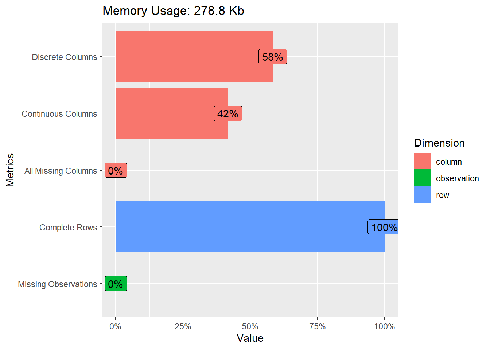
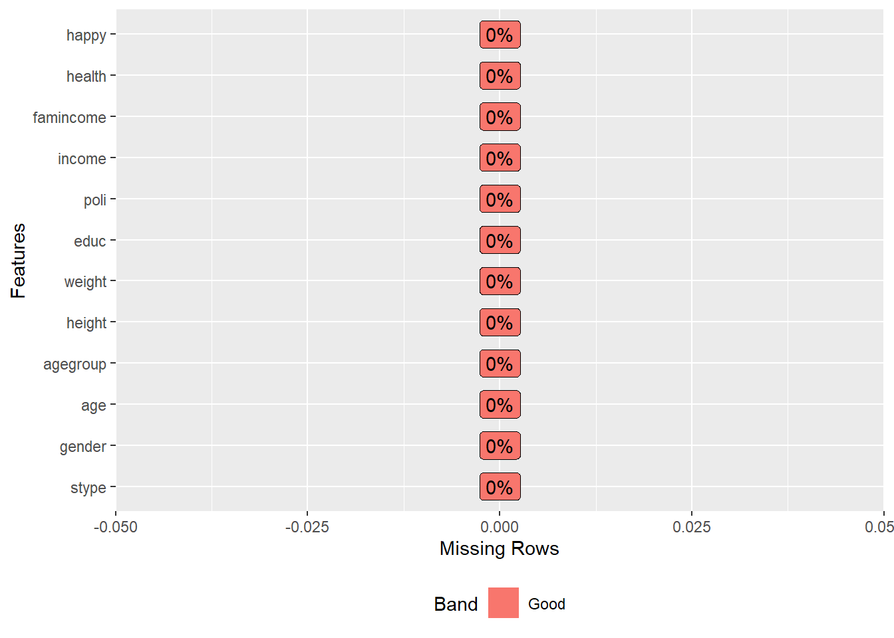
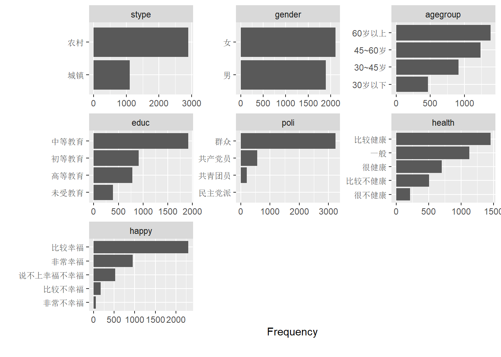
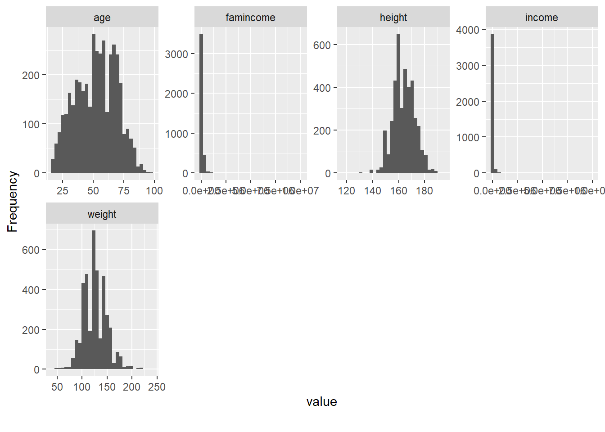

4 自动报告
代码提供：刘小妹 黄国政
4.1 使用方法
加载数据
load(file = "core.RData")library(DataExplorer)
introduce(core)## # A tibble: 1 × 9
## rows columns discrete_columns continuous_columns all_missing_columns
## <int> <int> <int> <int> <int>
## 1 4001 12 7 5 0
## # ℹ 4 more variables: total_missing_values <int>, complete_rows <int>,
## # total_observations <int>, memory_usage <dbl>plot_intro(core)
plot_missing(core)
plot_bar(core)
plot_histogram(core)
create_report(core)##
##
## processing file: report.rmd## 1/42
## 2/42 [global_options]
## 3/42
## 4/42 [introduce]
## 5/42
## 6/42 [plot_intro]## 7/42
## 8/42 [data_structure]
## 9/42
## 10/42 [missing_profile]## 11/42
## 12/42 [univariate_distribution_header]
## 13/42
## 14/42 [plot_histogram]## 15/42
## 16/42 [plot_density]
## 17/42
## 18/42 [plot_frequency_bar]## 19/42
## 20/42 [plot_response_bar]
## 21/42
## 22/42 [plot_with_bar]
## 23/42
## 24/42 [plot_normal_qq]## 25/42
## 26/42 [plot_response_qq]
## 27/42
## 28/42 [plot_by_qq]
## 29/42
## 30/42 [correlation_analysis]## 31/42
## 32/42 [principal_component_analysis]## 33/42
## 34/42 [bivariate_distribution_header]
## 35/42
## 36/42 [plot_response_boxplot]
## 37/42
## 38/42 [plot_by_boxplot]
## 39/42
## 40/42 [plot_response_scatterplot]
## 41/42
## 42/42 [plot_by_scatterplot]## output file: D:/04_Rrender/Bookdown/2020sRBook/2020sRBook1/report.knit.md## "D:/StatisticsSoftware/Rstudio/resources/app/bin/quarto/bin/tools/pandoc" +RTS -K512m -RTS "D:/04_Rrender/Bookdown/2020sRBook/2020sRBook1/report.knit.md" --to html4 --from markdown+autolink_bare_uris+tex_math_single_backslash --output pandoc3be06b515f8.html --lua-filter "D:\StatisticsSoftware\R\R-4.2.3\library\rmarkdown\rmarkdown\lua\pagebreak.lua" --lua-filter "D:\StatisticsSoftware\R\R-4.2.3\library\rmarkdown\rmarkdown\lua\latex-div.lua" --embed-resources --standalone --variable bs3=TRUE --section-divs --table-of-contents --toc-depth 6 --template "D:\StatisticsSoftware\R\R-4.2.3\library\rmarkdown\rmd\h\default.html" --no-highlight --variable highlightjs=1 --variable theme=yeti --mathjax --variable "mathjax-url=https://mathjax.rstudio.com/latest/MathJax.js?config=TeX-AMS-MML_HTMLorMML" --include-in-header "C:\Users\Sonde\AppData\Local\Temp\RtmpuIqSfN\rmarkdown-str3be07a9435ca.html"##
## Output created: report.html